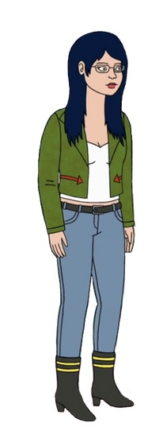
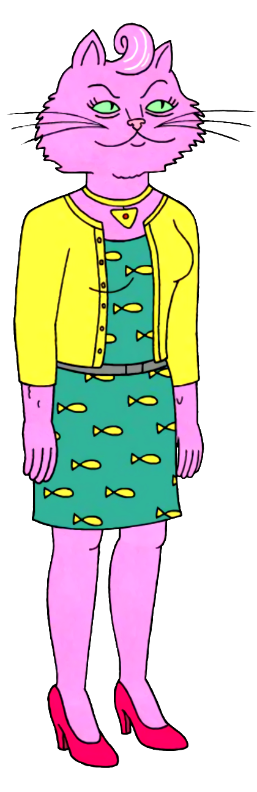
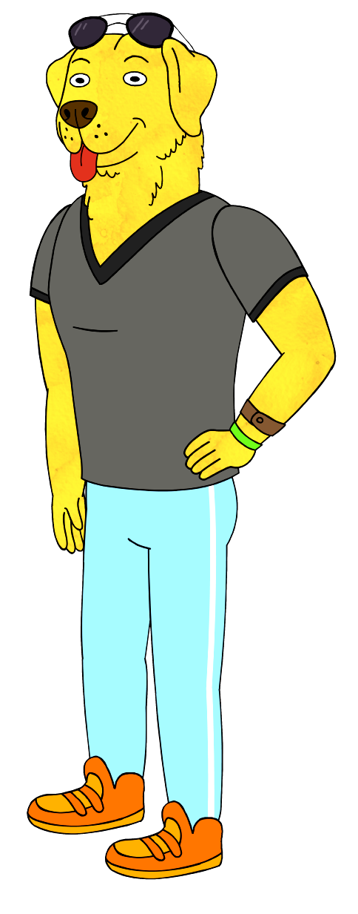

Personajes Principales
Bojack Horseman

El protagonista de la serie, es un caballo antropomórfico y exactor de televisión. Lucha con la fama pasada, la autodestrucción y la búsqueda de significado en su vida. Es cínico, autocrítico y a menudo tiene dificultades para conectarse con los demás
Diane Nguyen

Una escritora y amiga cercana de BoJack. Es inteligente, reflexiva y tiende a cuestionar el mundo que la rodea. Aporta un enfoque crítico y emocional a la serie.
Princess Carolyn

Una agente de talentos y exnovia de BoJack. Es ambiciosa, trabajadora y apasionada por su carrera. A menudo lucha por encontrar un equilibrio entre su vida personal y profesional.
Mr. Peanutbutter

Un perro antropomórfico y amigo de BoJack. Es optimista, alegre y siempre ve el lado positivo de las cosas. A pesar de su personalidad extrovertida, Mr. Peanutbutter también tiene sus propias luchas internas.
Tod Chavez
El extravagante compañero de piso de BoJack. Es optimista, excéntrico y a menudo se ve envuelto en situaciones cómicas y extrañas. A pesar de su aparente despreocupación, Todd aporta momentos de claridad y sabiduría.
Sarah Lynn
Una exestrella infantil y amiga de BoJack. Lucha con los efectos de la fama infantil, la adicción y la búsqueda de identidad. Su historia ejemplifica los desafíos emocionales que enfrentan los personajes.